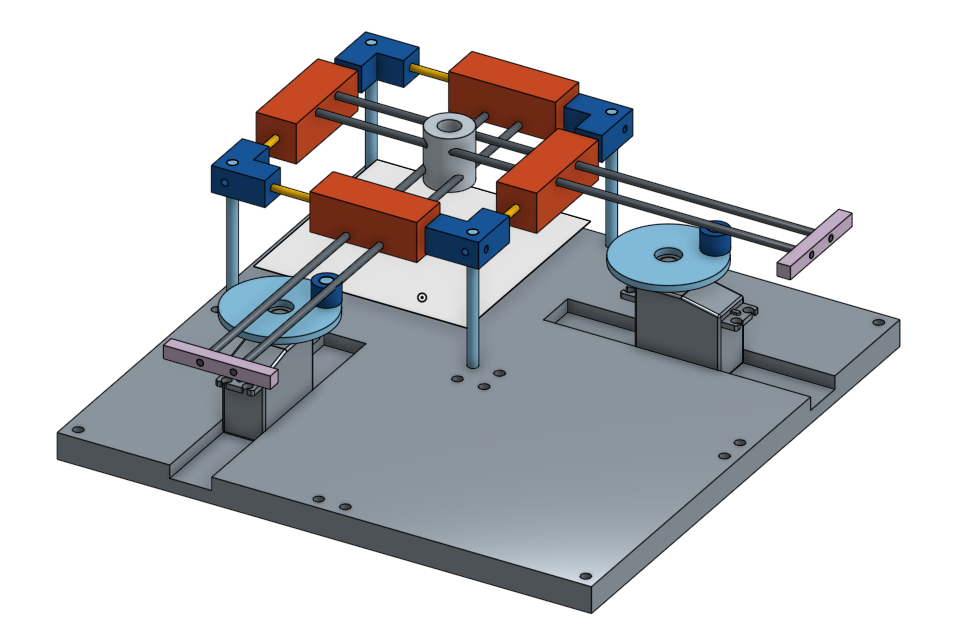

Lissajous Figure Drawer
04/26/2016
This is a work-in-progress.
 The goal of this project is to create a working mechanical demonstration of Lissajous curves. The project idea popped up while reading about Lissajous figures in A.P. French's Vibrations and Waves.
Two independent sliders are designed to be driven by DC servo motors that are controlled by an Arduino. The sliders drive a central stage that can hold a pen which can mark on paper. By varying the ratio of the rotational speeds, a variety of Lissajous curves can be obtained.
An additional design constraint has been to spend as little as possible on this project and so most materials (except for the Arduino and DC servo's) are either scrap or 3D-printed. The rods were obtained for under $15 from the Home Depot.
Currently, I'm focused on designing 3D printed linear bearings that are compliant and have the exact degrees of freedom needed to allow smooth movement without binding.